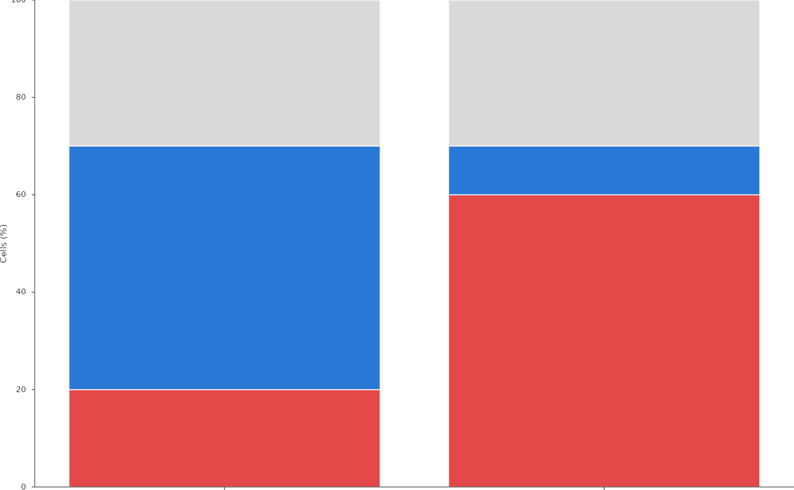

One bar per category (for example per patient), stacked by a second variable (cell types, neighbourhoods, clinical groups) in a fixed order, with thin white separators between the segments. Bars can run upwards or to the right. Category labels are drawn as rotated figure tick labels and can be coloured (for example by clinical group); a short text above each bar (for example the tissue area) and a horizontal reference line can be added. A single stack level gives plain bars.
Usage
PlotStackedBars(
data,
x = "x",
stack = "stack",
value = "value",
x_order = NULL,
x_order_by = NULL,
stacks = NULL,
colours = NULL,
fill_column = NULL,
scale = 1,
width = 0.82,
edge_colour = "white",
edge_width = 0.6,
horizontal = FALSE,
limits = NULL,
breaks = NULL,
break_labels = NULL,
category_limits = NULL,
value_label = NULL,
value_label_size = 5.8,
value_label_angle = NULL,
tick_size = 5.5,
tick_length = 2,
category_label = NULL,
category_label_size = 5.5,
show_categories = TRUE,
x_labels = NULL,
x_label_colours = NULL,
category_angle = 50,
category_size = 5.1,
category_ticks = TRUE,
axes = TRUE,
top_text = NULL,
top_format = "%.0f",
top_at = 101.5,
top_size = 4.4,
top_colour = "muted",
top_offset = NULL,
nbins = NULL,
value_expand = 1.05,
top_title = NULL,
top_title_at = -0.6,
top_title_hjust = 1,
reference = NULL,
legend = NULL,
texts = NULL,
values = NULL,
style = ManuscriptStyle()
)Arguments
- data
Long data: one row per category and stack level.
- x, stack, value
Column names: category, stack level and segment size.
- x_order
Category order: character vector or data frame (ordered by a
rankcolumn if present); default first appearance.- x_order_by
Optional numeric column giving the category order.
- stacks
Stack order from the baseline outwards; default first appearance.
- colours
Named colours per stack level.
- fill_column
Optional column with explicit segment colours.
- scale
Factor applied to
value(for example 100 for fractions).- width
Bar width in category units.
- edge_colour, edge_width
Segment outline (points; 0 for none).
- horizontal
Bars running to the right, first category on top.
- limits, breaks, break_labels
Value axis limits, breaks and labels; default limits from zero to 5% beyond the tallest bar.
- category_limits
Category axis limits; default half a category beyond the outer bars (5% of the bar extent for horizontal bars).
- value_label, value_label_size, value_label_angle
Value axis title.
- tick_size, tick_length
Value axis tick label size and tick length.
- category_label, category_label_size
Category axis title.
- show_categories, x_labels, x_label_colours
Category labels: shown or not, display mapping and named text colours.
- category_angle, category_size
Category label rotation and size.
- category_ticks
Draw tick marks at the categories.
- axes
Draw the value and category axis lines.
- top_text
Optional column with one value per category, printed above the bar (right of it for horizontal bars) with
top_formatattop_at(value units).- top_format, top_at, top_size, top_colour
Format and placement.
- top_offset
Optional offset (value units) of the top values above each bar instead of the fixed position
top_at.- nbins
Optional maximum number of value-axis intervals; default breaks then follow
NiceBreaks()instead ofpretty().- value_expand
Default upper limit as a multiple of the tallest bar.
- top_title
Optional text left (or right) of the top values, at
top_title_atcategory units from the first bar centre (above or below them for horizontal bars).- top_title_at, top_title_hjust
Placement of
top_title.- reference
Optional reference line: list of
value,colour,width(points) andlinetype.- legend
Optional legend of the stack colours, as the
legendofPlotEmbedding()(useshapes"s"for squares).- texts, values
Free texts and template values, as in
PlotAnnotatedHeatmap().- style
A
ManuscriptStyle()object.
Examples
d <- data.frame(x = rep(c("p1", "p2"), each = 3), stack = rep(c("a", "b", "c"), 2),
value = c(0.2, 0.5, 0.3, 0.6, 0.1, 0.3), area = rep(c(6.2, 118), each = 3))
PlotStackedBars(d, scale = 100, limits = c(0, 100),
colours = c(a = "#e34948", b = "#2a78d6", c = "#D9D9D9"),
top_text = "area", top_title = "Area (mm2)", value_label = "Cells (%)")
